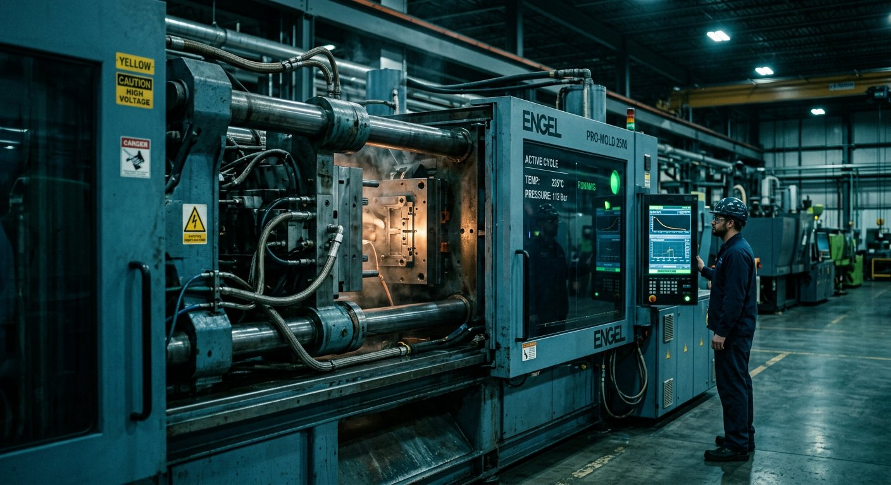
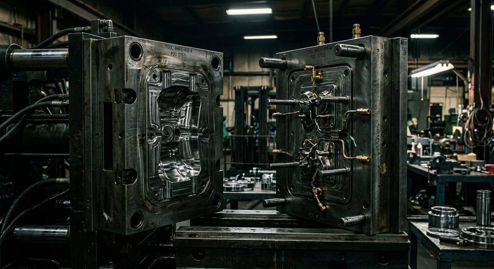
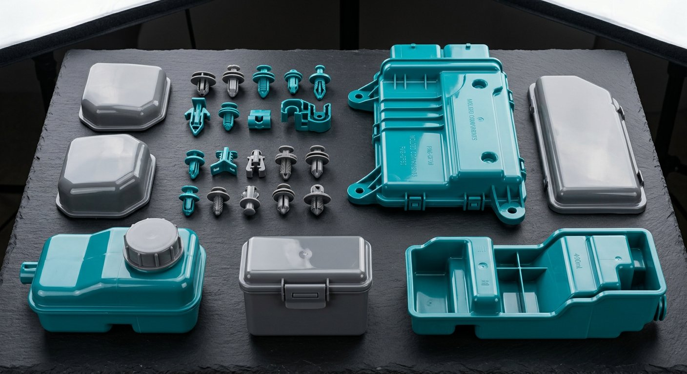

✎
مهندسی و DFM
بازبینی نقشه شما از نگاه تولیدپذیری: ضخامت دیواره، شیب پران، محل گیت و خط جدایش — قبل از اینکه فولاد بریده شود.
TPT کارخانه تزریق پلاستیک است؛ از طراحی و ساخت قالب تا تولید انبوه، بازرسی ابعادی و بستهبندی — همه زیر یک سقف. اسکرول کنید تا ببینید قطعه شما چطور متولد میشود.
مواد اولیه گرید بستهبندی، با گواهی مواد و کد رهگیری برای هر بچ.
دانهها وارد جریان میشوند، همراستا و چرخان به سمت مرکز کشیده میشوند.
مواد ذوب میشوند و یکدست در مسیر تزریق روان میشوند.
مذاب با فشار کنترلشده حفره قالب را پر میکند؛ فرم قطعه با دقت ساخته میشود.
خنککاری یکنواخت، تثبیت ابعاد و جدا شدن راهگاه — فرم نهایی کامل میشود.
دربهایی بینقص، برای محافظتی بینقص. بازرسی، شمارش و بستهبندی آماده ارسال.
هر ۹ ثانیه یک سیکل کامل. سه شیفت، هفت روز هفته، بدون توقف خط.
لازم نیست بین چند پیمانکار بدوید. مهندسی، قالبسازی، تولید و مونتاژ در همین مجموعه انجام میشود.
بازبینی نقشه شما از نگاه تولیدپذیری: ضخامت دیواره، شیب پران، محل گیت و خط جدایش — قبل از اینکه فولاد بریده شود.
قالبهای تکحفره تا ۳۲ حفره، هاترانر، اسلایدر و آنکاندر. فولاد ۱٫۲۳۴۴ و ۱٫۲۷۳۸ با عملیات حرارتی.
۲۴ پرس از ۵۰ تا ۶۵۰ تن، سه شیفت کاری، تغذیه مرکزی مواد و ثبت پارامتر هر شات برای رهگیری.
ترکیب پلاستیک سخت با TPE برای دستههای نرم، آببندی و قطعات لمسی — بدون نیاز به مونتاژ اضافه.
چاپ پد، تامپو، جوش التراسونیک، درج مهره فلزی و مونتاژ زیرمجموعه تا سطح محصول قابل فروش.
CMM، پروژکتور پروفایل، تست کشش و گزارش FAI/PPAP. هر محموله با برگه بازرسی تحویل میشود.
تفاوت یک قطعه خوب و یک قطعه دورریز، چند دهم میلیمتر و چند ثانیه زمان خنککاری است. ما آن اعداد را ثبت و کنترل میکنیم.



برای قطعات با قالب موجود از ۱۰۰۰ عدد و برای پروژههای قالب جدید معمولاً از ۵۰۰۰ عدد در سال شروع میکنیم تا سرمایهگذاری قالب توجیه اقتصادی داشته باشد. برای نمونهسازی، راهکار قالب آلومینیومی کمتیراژ هم داریم.
بسته به پیچیدگی، بین ۱۸ تا ۳۰ روز کاری تا نمونه T1. قالبهای دارای اسلایدر، هاترانر یا چند حفره ممکن است تا ۴۵ روز زمان ببرد.
قالبی که هزینهاش را پرداخت کردهاید، مالکیتش با شماست. با شمارهگذاری و شناسنامه قالب نگهداری میشود و هر زمان بخواهید تحویل داده میشود.
بله. بر اساس دمای کاری، بار مکانیکی، تماس با مواد شیمیایی، نیاز به شفافیت یا مقاومت UV، چند گزینه با مقایسه قیمت پیشنهاد میدهیم.
هر محموله با برگه بازرسی ابعادی ارسال میشود و برای پروژههای خودرویی گزارش FAI و مدارک PPAP تهیه میکنیم.
بله، در صورت تایید فنی و اعلام شفاف درصد آسیابی. ضایعات راهگاه هم بهصورت کنترلشده در همان قطعه بازچرخش میشود.
فرم را پر کنید یا مستقیم تماس بگیرید. کارشناس فنی — نه اپراتور فروش — پاسخ شما را میدهد.